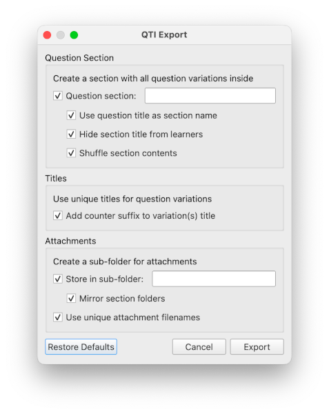

Take control of question creation
BSEditor is the main question creation tool of BSGenerator. It provides a powerful editor to easily control every detail of a question, from integration of files and images, to elaborate scoring approaches.
Being a native computer application (Mac and Windows), you can use it everywhere, with or without internet connectivity, and easily access all assets from your local machine.
Python integration for unlimited potential
BSEditor integrates a full Python distribution, or you can use your own environment and libraries. This provides you with the power to create on-the-fly datasets, images, plots, regular expressions, etc.
The ability to compile a question several times is deeply integrated into the software. This means that you can easily create variations of questions, improving both integrity during exams, and reuse of questions in several tests.

Format independence
Although the format of questions used by BSEditor is unique, it can easily be converted to several other formats, including the highly accepted QTI open format. This means that you will never be stuck with a unique format for your educational material.
This flexibility with formats allows you to store your questions locally in your device, in a web-based drive, in the online Evaluation Tool of your choice, or indeed in all three at the same time.